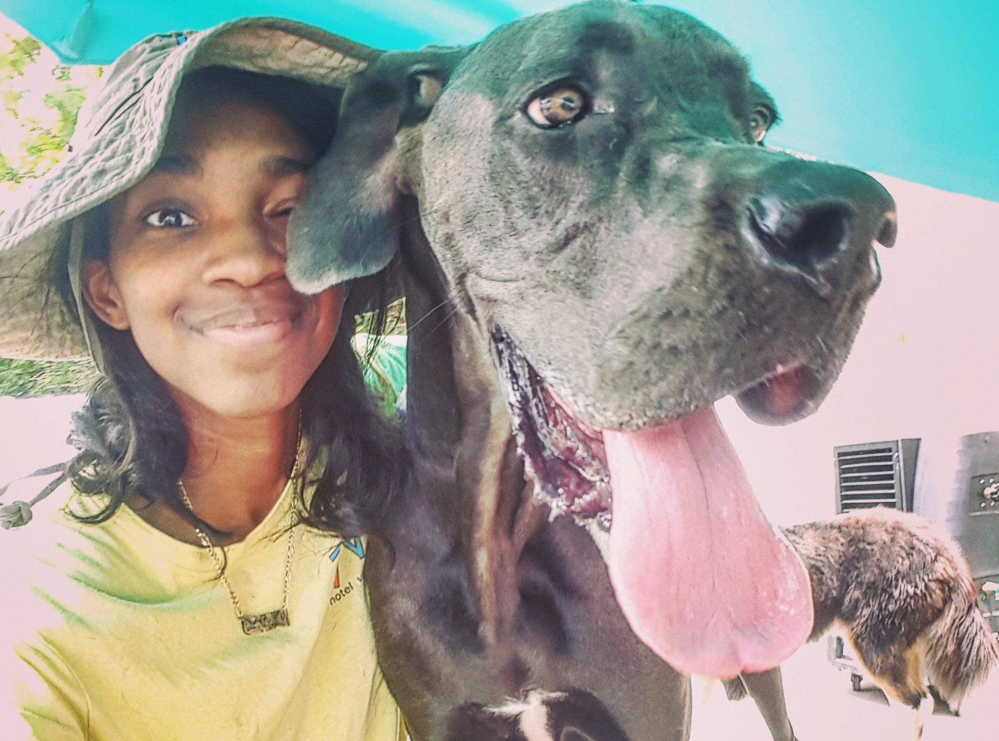

Our Sitters - Arrington C.

Arrington C. Sitter Bio:
I have had pets my whole life. I was born into a family that had 2 yorkies. I've had cockatiels, a parakeet, many Betta fish, dogs, cats, ferrets, rats, and I've worked with horses. Taking care of other peoples pets isn't new for me, I've been doing it for years for close friends and family, and currently work at a doggie day care.
Animals are my life, I don't know what I would do without them. I treat every animal with respect, as if they are my own. I have very happy healthy pets and theres nothing I enjoy more than being able to provide the love and care to other pets as I do my own. I've worked with all kinds of pets - timid, hyper, aggressive... My personality allows me to easily bond with most animals. I love making new animal friends and so far, they love me too!